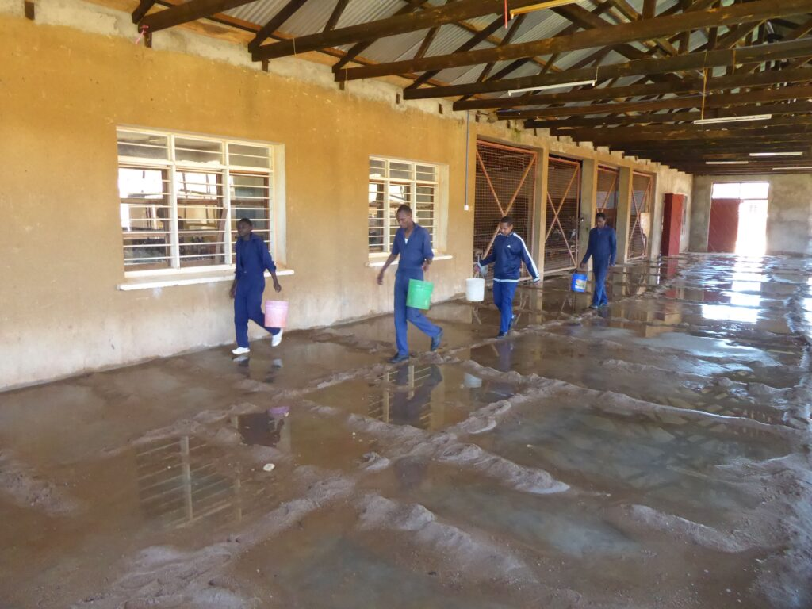
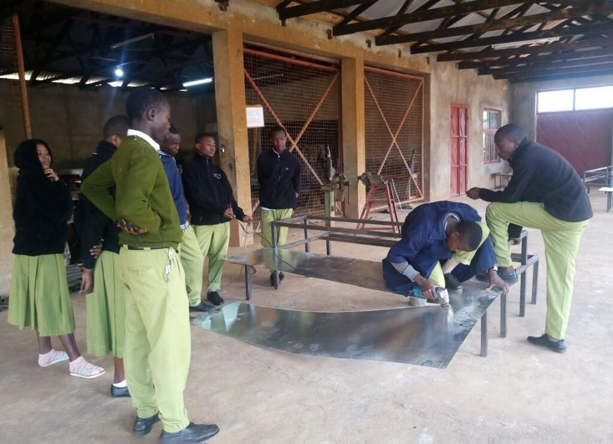
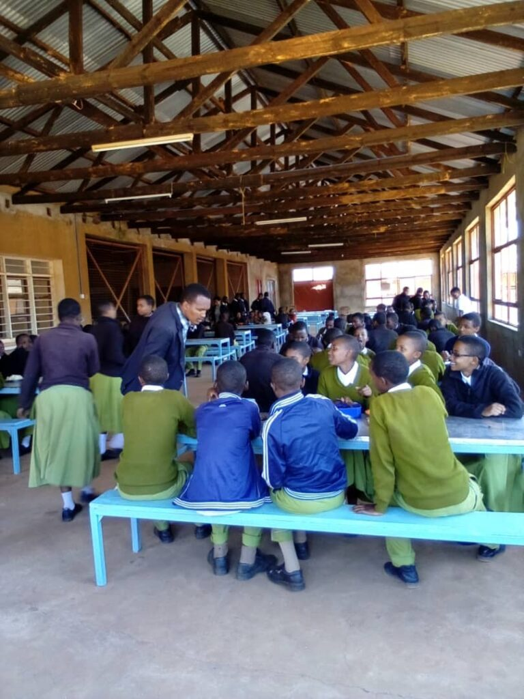
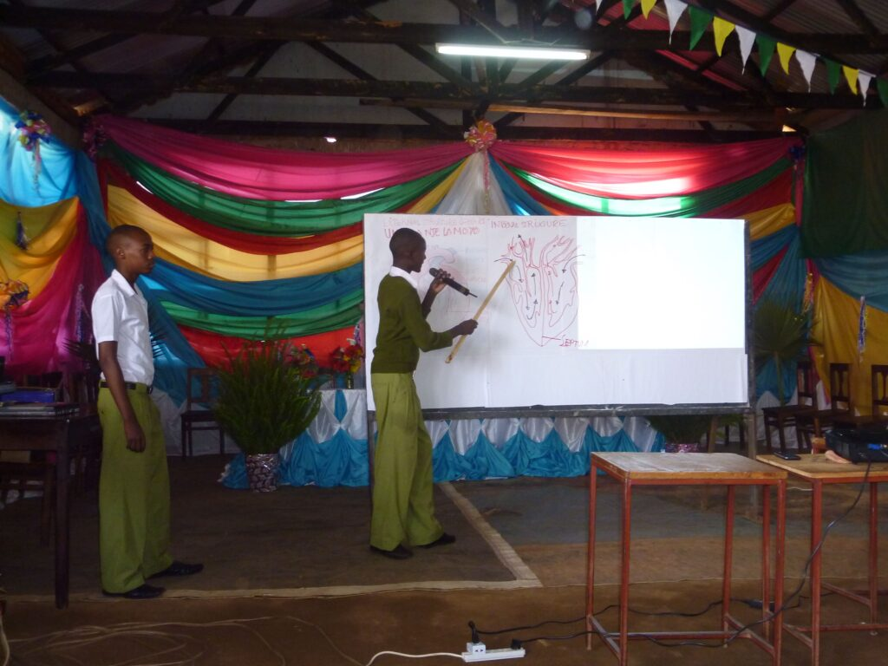
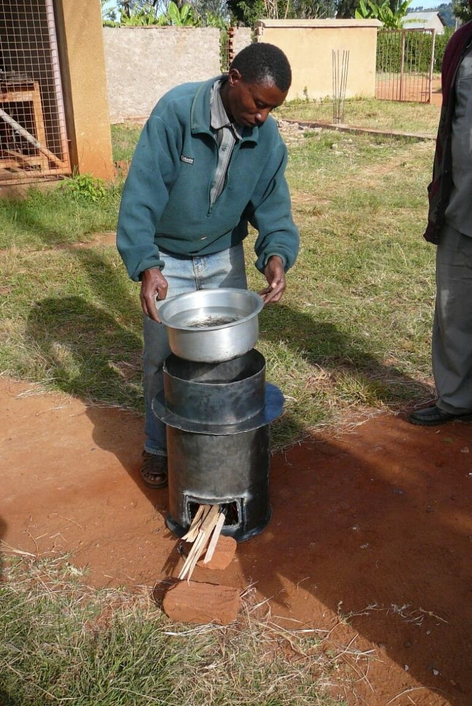

Sanu Tec – Schritt für Schritt zum Mehrzwecksaal.
Sanu Technical Secondary School in Mbulu: Ein Bau über sieben Jahre, weil nie genug Geld auf einmal da war.
In dieser Schule ist Kusaidia Afrika in mehreren kleinen Projekten engagiert – insbesondere an einem Bau, der sich über viele Jahre hinzog, weil eben nie genug Geld vorhanden war, um ihn fertigzustellen: der Speise- und Mehrzwecksaal.
2013 kam der Hilferuf: keine Mittel mehr für das Dach. Kusaidia finanzierte die Fertigstellung des Daches, sodass der Raum provisorisch benutzt werden konnte.

Bashanet liegt auf rund 2000 m Höhe. In den Monaten Juni bis September kann es empfindlich kalt werden, und in der warmen, trockenen Jahreszeit trägt der Wind viel Sand ein. So wurden 2016 die Fensterscheiben von Kusaidia finanziert – die Metallrahmen hatten die Schüler selbst angefertigt. 2019 folgte ein Zementestrichboden. Bis dahin war in der Halle gestampfter Lehmboden.
2020 beantragte die Schule die Finanzierung von Tischen und Bänken, um den Saal als Speisesaal oder Mehrzweckraum nun voll nutzen zu können. Bis dahin saßen die Studenten bei schlechter Witterung auf dem Boden oder improvisierten Bänken.
Hilfe zur Selbsthilfe
Bei den meisten Projekten finanziert Kusaidia Afrika lediglich die Materialkosten. Die Schule errichtet die Bauwerke selbst – mit Lehrern und Studenten im Rahmen der Ausbildung. Eine Besonderheit dieser Schule ist nämlich, dass neben der Sekundarausbildung auch Handwerksberufe gelehrt werden, unter anderem im Bauhandwerk.




Mehrzweckraum – wofür?
Als Mehrzweckraum erlebten wir den Saal 2015. Damals war gerade das Schuljahr-Abschlussfest im Gange. Eltern waren eingeladen, und die Schüler präsentierten Ergebnisse ihres Studiums – darunter eine Elektrolyse, die Erzeugung von Knallgas und die Erklärung der Funktion des menschlichen Herzens. Für uns Besucher aus Europa eine sehr eindrückliche Veranstaltung.
In der KFZ-Abteilung wird zwar unter primitiven Verhältnissen gearbeitet – aber oft Erstaunliches erreicht. Etwa wenn ein altes Auto von Grund auf restauriert wird.
Eine ganz besondere Erinnerung
Bei unserem Besuch 2012 brachten wir – zwei Ingenieure, Dr. Hans Riegel und Rolf Schnee – die Skizzen eines Ofens mit, der gegenüber der herkömmlichen Kochweise am offenen Feuer etwa 80 % Brennmaterial einspart und sich aus 1 mm starkem Blech bauen lässt.
Ein Lehrer der Sanu Technical Secondary School hat diesen Ofen mit wenig Hilfsmittel erstaunlich schnell erstellt.

Hilfe, die sichtbar bleibt.
Materialkosten, die die Schule selbst nicht stemmen kann – aber alles weitere von Hand baut.